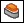

Construct a lip or groove
-
Choose Home tab→Solids group→Thin-Wall list→Lip

. -
Click the edges you want to add a lip or groove to, then click the Accept (check mark) button on the command bar.
-
Position the rectangle on the outside of the selected edge to form a lip, or on the inside to form a groove, then click.
-
Finish the feature.
-
The position of the cross section profile is dictated by the position of the cursor over the model. Because the Lip command can both add and remove material, the position of the cross section profile determines whether material will be added or removed.
-
Because the default size of the cross section is very small, you may find it helpful to enter the values for the cross section before positioning.
-
The cross section profile is generally tied to the endpoint of the first segment you select for the path. If the path is tangent, you may need to move the cursor over the model while investigating each vertex for a red cross section profile.
Learn more
Lip and groove featuresLook up more details
Lip commandLip command bar
Example: lip or groove